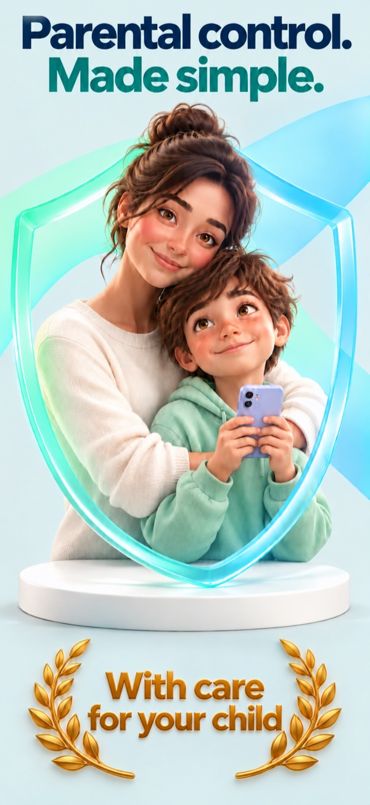
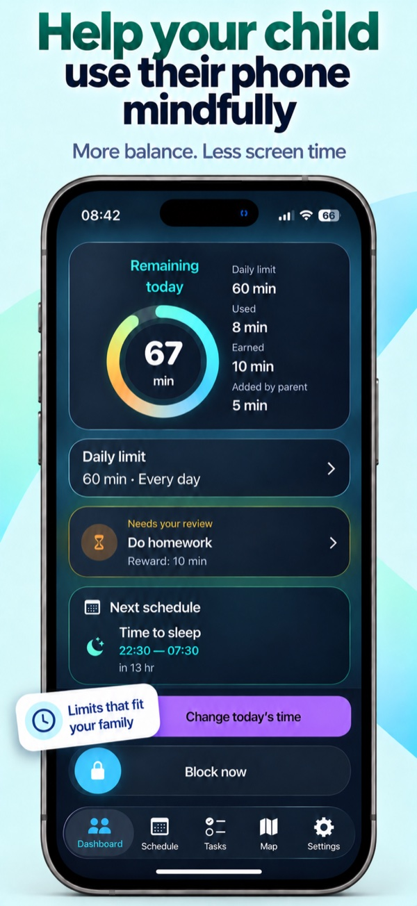
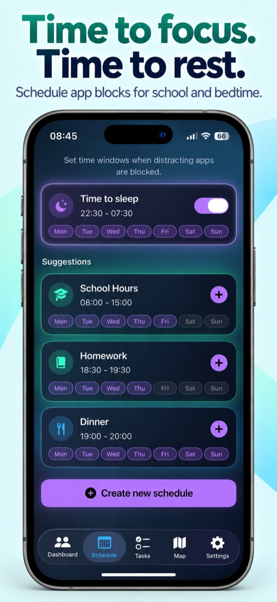
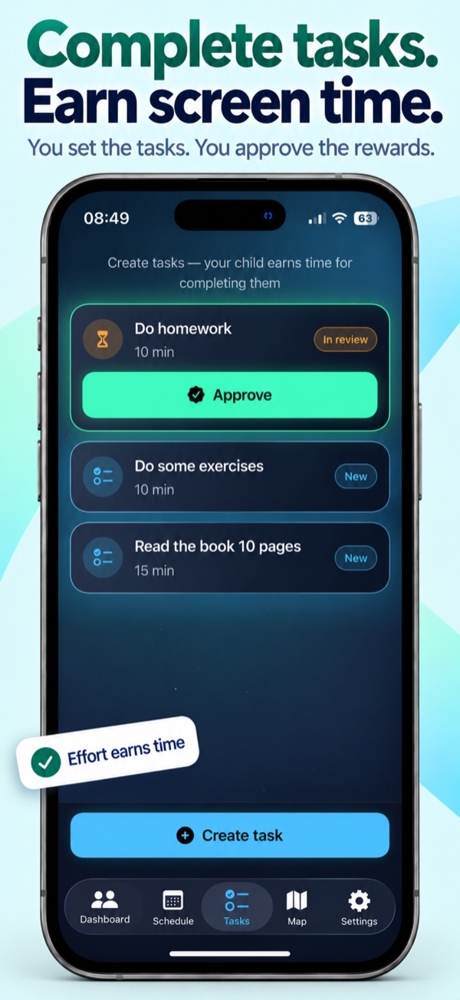
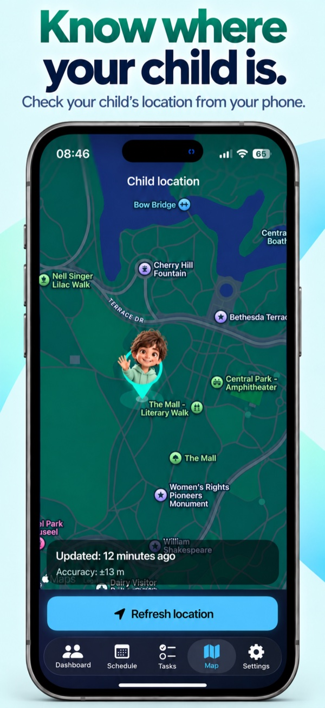

A rhythm that fits your week
Set one daily limit or choose a different allowance for each day. Less on school days, more on weekends — you decide.
A little more balance
Clear rules for screen time. Space for everything else. Set limits, plan breaks and turn completed tasks into extra app time — all from your phone.
One app. Two phones. Parent and child roles.

Everyday tools for your family
Practical ways to make screen time fit into your child’s day.
Set one daily limit or choose a different allowance for each day. Less on school days, more on weekends — you decide.
Schedule when selected apps are blocked, whether it’s bedtime, homework or a family meal.
Create a task and choose a reward in app minutes. Your child submits the completed task; you approve it and grant the time.
Request your child’s location and view it on a map.
Block or unblock selected apps, adjust today’s allowance and see the remaining time. Detailed usage statistics are available on your child’s phone in PIN-protected parent mode.
A closer look




Swipe to explore the screens →
Start together
A guided setup walks you through the permissions and settings you need.
Choose the parent role on your phone and the child role on your child’s phone.
Create a pairing code on the parent’s phone and enter it on the child’s phone.
Grant Screen Time access, choose apps to manage, set a parent PIN and confirm the daily allowance.
Good to know
No. You choose which apps to manage. Limits and scheduled breaks apply to those selections, not a complete lock of the phone.
Yes. Once the phones are linked, you can manage limits, schedules, tasks and manual app blocking from the parent’s phone. Remote commands need a connection and confirmation from the child’s phone; delivery may be delayed.
You request the child’s location when needed. Background requests require “Always” location permission on the child’s phone. Check the update time on the map: location may be unavailable or out of date when the phone cannot respond. This is not an emergency service.
No. Additional removal protection through Apple Family Sharing and child authorization is optional when getting started. You can return to it in Settings.
Here to help
Questions about setup or something not working? Tell us what happened and include your iOS and app versions. Please don’t send your parent PIN or pairing code.